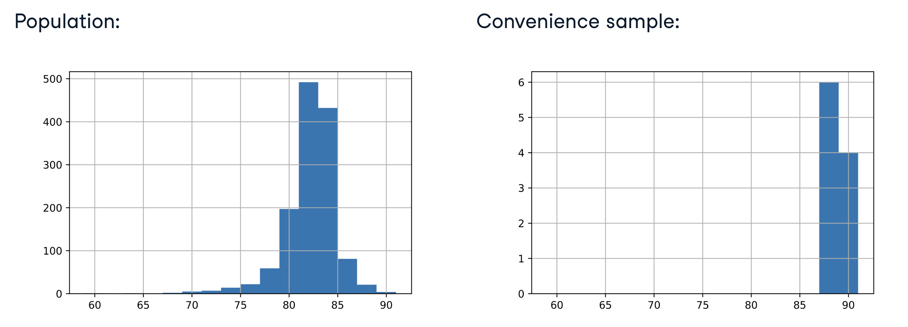
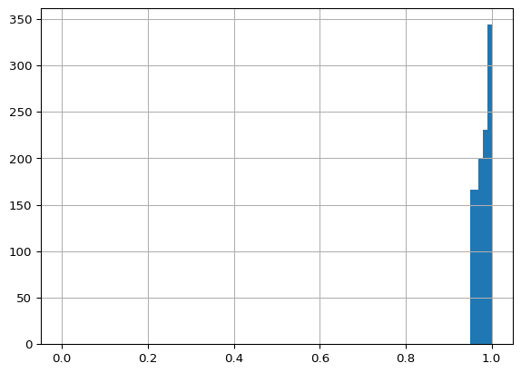
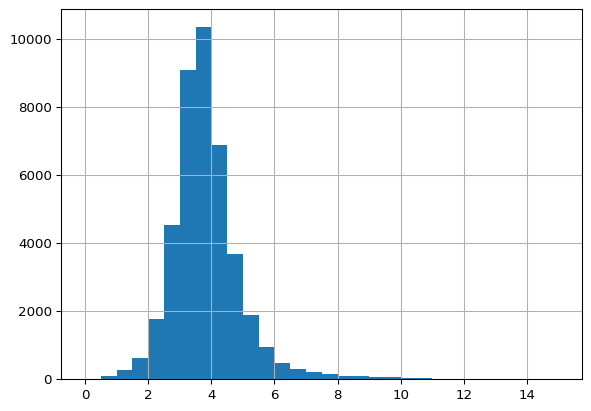

pts_vs_flavor_pop = coffee_ratings[["total_points", "flavor"]]Introducción al Muestreo
Aprende qué es el muestreo y por qué es tan poderoso. También aprenderás sobre los problemas causados por el muestreo de conveniencia y las diferencias entre la verdadera aleatoriedad y la pseudoaleatoriedad.
Muestreo y estimaciones puntuales
La técnica de trabajar con un subconjunto de toda la población se le llama muestreo.
- Población vs Muestreo La población es el conjunto completo de datos que nos interesan.
- No se refiere a personas.
- Típicamente, no sabremos cómo es toda la población.
La muestra es el subconjunto de datos con el que estamos trabajando.
Coffee rating dataset

- Cada fila representa 1 café.
- Hay 1338 filas
- Al café se le asigna una puntuación de cero a cien, que se almacena en la columna
total_cup_points. - Otras columnas contienen información contextual como la variedad y el país de origen.
- Puntuaciones entre 0 y 10 para atributos del café como el aroma y el cuerpo.
- No contiene todos los cafés del mundo, por lo que no sabemos exactamente cuál es la población de cafés.
- Hay suficientes para considerarla como la población de interés.
Points vs. Flavor: Población

- Points vs. Flavor: 10 filas de muestra
pts_vs_flavor_samp = pts_vs_flavor_pop.sample(n=10)
El método .sample() de pandas devuelve un subconjunto aleatorio de filas. Establecer n en 10 significa que devuelve 10 filas aleatorias. En la muestra aparecen 10 muestras únicas.
Muestreo en Python para Series
- Use
.sample()enpandaspara DataFrames y Series.
- Use
cup_points_samp = coffe_ratings['total_cup_points'].sample(n=10)
Parámetros de Población & Puntos Estimados
Un parámetro de población es un cálculo realizado sobre el conjunto de datos de población.
import numpy as np
np.mean(pts_vs_flavor_pop['total_cup_points'])
Una estimación puntual o estadística de muestra, es un cálculo basado en el conjunto de datos de muestra.
np.mean(cup_points_samp)
Puntos estimados con pandas
Trabajar con pandas puede ser más fácil que trabajar con Numpy. Estos cálculos de media se pueden realizar utilizando el método de pandas
.mean()
pts_vs_flavor_pop['flavor'].mean()
pts_vs_flavor_samp['flavor'].mean()
Motivos del muestreo
El muestreo es una técnica importante en tu arsenal estadísico. Sin embargo, no siempre es adecuado: hay que saber cuándo utilizarlo y cuándo trabajar con todo el conjunto de datos.
¿Cuál de los siguientes no es un buen escenario para utilizar el muestreo?
Respuestas posibles
Diez mariposas es un conjunto de datos pequeño, por lo que el muestreo no es útil aquí.
Muestreo simple con pandas
A lo largo de este capítulo , explorarás los datos de canciones de Spotify. Cada fila de este conjunto de datos de población representa una canción, y hay más de 40000 filas. Las columnas incluyen el nombre de la canción, los artistas que la interpretaron, al año de lanzamiento y atributos de la canción como su duración, tempo y bailabilidad. Empezarás por fijarte en las duraciones.
Tu primera tarea es tomar una muestra del conjunto de datos de Spotify y comparar la duración media de la población con la de la muestra.
import pandas as pd
ruta = './data/spotify_2000_2020.feather'
spotify_population = pd.read_feather(ruta)
spotify_population.head()| acousticness | artists | danceability | duration_ms | duration_minutes | energy | explicit | id | instrumentalness | key | liveness | loudness | mode | name | popularity | release_date | speechiness | tempo | valence | year | |
|---|---|---|---|---|---|---|---|---|---|---|---|---|---|---|---|---|---|---|---|---|
| 0 | 0.97200 | ['David Bauer'] | 0.567 | 313293.0 | 5.221550 | 0.227 | 0.0 | 0w0D8H1ubRerCXHWYJkinO | 0.601000 | 10.0 | 0.110 | -13.441 | 1.0 | Shout to the Lord | 47.0 | 2000 | 0.0290 | 136.123 | 0.0396 | 2000.0 |
| 1 | 0.32100 | ['Etta James'] | 0.821 | 360240.0 | 6.004000 | 0.418 | 0.0 | 4JVeqfE2tpi7Pv63LJZtPh | 0.000372 | 9.0 | 0.222 | -9.841 | 0.0 | Miss You | 51.0 | 2000-12-12 | 0.0407 | 117.382 | 0.8030 | 2000.0 |
| 2 | 0.00659 | ['Quasimoto'] | 0.706 | 202507.0 | 3.375117 | 0.602 | 1.0 | 5pxtdhLAi0RTh1gNqhGMNA | 0.000138 | 11.0 | 0.400 | -8.306 | 0.0 | Real Eyes | 44.0 | 2000-06-13 | 0.3420 | 89.692 | 0.4790 | 2000.0 |
| 3 | 0.00390 | ['Millencolin'] | 0.368 | 173360.0 | 2.889333 | 0.977 | 0.0 | 3jRsoe4Vkxa4BMYqGHX8L0 | 0.000000 | 11.0 | 0.350 | -2.757 | 0.0 | Penguins & Polarbears | 52.0 | 2000-02-22 | 0.1270 | 165.889 | 0.5480 | 2000.0 |
| 4 | 0.12200 | ['Steve Chou'] | 0.501 | 344200.0 | 5.736667 | 0.511 | 0.0 | 4mronxcllhfyhBRqyZi8kU | 0.000000 | 7.0 | 0.279 | -9.836 | 0.0 | 黃昏 | 53.0 | 2000-12-25 | 0.0291 | 78.045 | 0.1130 | 2000.0 |
Instrucciones
- Muestra 1000 filas de
spotify_population, asignándolas aspotify_sample.
# Sample 1000 rows from spotify_population
spotify_sample = spotify_population.sample(n=1000)
# print sample
print(spotify_sample) acousticness artists danceability \
2839 0.980000 ['Deuter'] 0.136
36505 0.323000 ['JAY-Z', 'Rihanna', 'Kanye West'] 0.591
37798 0.000009 ['Deftones'] 0.374
29429 0.110000 ['RJD2'] 0.587
31214 0.127000 ['Young M.A'] 0.874
... ... ... ...
28834 0.016200 ['Sam Tinnesz', 'Yacht Money'] 0.573
14285 0.016000 ['COIN'] 0.572
21461 0.003240 ['Rascal Flatts'] 0.582
33220 0.388000 ['Snoh Aalegra'] 0.705
34344 0.233000 ['Uncle Lucius'] 0.625
duration_ms duration_minutes energy explicit \
2839 498213.0 8.303550 0.0955 0.0
36505 268013.0 4.466883 0.9210 1.0
37798 203067.0 3.384450 0.9160 1.0
29429 266200.0 4.436667 0.5230 0.0
31214 201824.0 3.363733 0.6320 1.0
... ... ... ... ...
28834 180691.0 3.011517 0.5390 0.0
14285 179013.0 2.983550 0.9160 0.0
21461 276320.0 4.605333 0.9520 0.0
33220 212787.0 3.546450 0.4330 1.0
34344 143333.0 2.388883 0.6860 0.0
id instrumentalness key liveness loudness \
2839 04M6R4Fbah2AvgBPbCCbkl 0.917000 4.0 0.0850 -21.049
36505 2a8CtZyPdd8w2csZh7oxpc 0.000000 1.0 0.3020 -1.787
37798 1oTKnx7AgEhA5wUs3Z8rrr 0.216000 6.0 0.3940 -5.153
29429 2C1nOw1nRxJaBWb9I1x05A 0.765000 9.0 0.1070 -9.947
31214 04WcxfTz7qwm2DZ1F3bTTt 0.000000 0.0 0.0907 -5.297
... ... ... ... ... ...
28834 7vguMCv8uVuZLiQJ156u3Z 0.000012 2.0 0.1050 -6.091
14285 15jIpgBlSbxsPVsKPNYkNp 0.000010 0.0 0.2080 -4.830
21461 2Fs18NaCDuluPG1DHGw1XG 0.000000 5.0 0.2230 -3.848
33220 2VqKx3HH8gaZPabNWYvksy 0.134000 4.0 0.0841 -9.706
34344 2V5ZTy99M1T7KxgxLS8Lyi 0.000115 4.0 0.0752 -5.002
mode name popularity release_date \
2839 0.0 Kindred Spirit 51.0 2007-02-13
36505 1.0 Run This Town 52.0 2010-11-22
37798 1.0 Needles and Pins 47.0 2003-05-19
29429 1.0 Smoke & Mirrors 53.0 2002
31214 1.0 Trap or Cap 71.0 2020-05-22
... ... ... ... ...
28834 0.0 Play with Fire (feat. Yacht Money) 72.0 2017-07-07
14285 1.0 Boyfriend 58.0 2017-04-21
21461 1.0 Life is a Highway 73.0 2006-01-01
33220 1.0 I Want You Around 71.0 2019-08-16
34344 1.0 Ain't It The Same 48.0 2009-04-10
speechiness tempo valence year
2839 0.0456 73.976 0.0392 2007.0
36505 0.3130 86.808 0.4280 2010.0
37798 0.0512 140.471 0.6240 2003.0
29429 0.0288 95.004 0.0457 2002.0
31214 0.2960 142.963 0.1190 2020.0
... ... ... ... ...
28834 0.0322 75.012 0.3900 2017.0
14285 0.0576 150.088 0.4640 2017.0
21461 0.0731 103.027 0.6550 2006.0
33220 0.2040 168.006 0.6020 2019.0
34344 0.0295 115.158 0.5280 2009.0
[1000 rows x 20 columns]- Calcula la duración media en minutos de
spotify_populationutilizandopandas. - Calcula la duración media en minutos de
spotify_sampleutilizandopandas.
# Calculate the mean duration in mins from spotify_population
mean_dur_pop = spotify_population['duration_minutes'].mean()
# Calculate the mean duration in mins from spotify_sample
mean_dur_sample = spotify_sample['duration_minutes'].mean()
# print the means
print(mean_dur_pop)
print(mean_dur_sample)3.8521519140900073
3.8687257Se observa que la duración media de las canciones en la muestra es similar, pero no idéntica a la duración media de las canciones en toda la poblacición.
Muestreos y cálculos sencillos con Numpy
También puedes utilizar numpy para calcular parámetros o estadísticas partir de una lista o de la serie pandas.
Instrucciones
- Crea una serie
pandas,loudness_pop, subdividiendo la columnaloudnessdespotify_population. - Muestra
loudness_poppara obtener 100 valores aleatorios, asignándolos aloudness_samp.
# Create a pandas Series from de loudness column of spotify_population
loudness_pop = spotify_population['loudness']
# Sample 100 values of loudness_pop
loudness_samp = loudness_pop.sample(n=100)
print(loudness_samp)32005 -3.335
6623 -4.405
11739 -2.553
19909 -7.368
14922 -5.724
...
6985 -7.822
6025 -6.162
32632 -4.859
19827 -3.155
18706 -8.377
Name: loudness, Length: 100, dtype: float64- Calcula la media de
loudness_poputilizandonumpy. - Calcula la media de
loudness_samputilizandonumpy.
import numpy as np
# Calculate the mean of loudness_pop
mean_loudness_pop = np.mean(loudness_pop)
# Calculate the mean of loudness_samp
mean_loudness_samp = np.mean(loudness_samp)
print(mean_loudness_pop)
print(mean_loudness_samp)-7.366856851353947
-7.488380000000001Nuevamente, observe que el valor calculado (la media) es cercano pero no idéntico en cada caso.
Muestreo de conveniencia
Antes del realizar el muestreo, debemos pensar en nuestro proceso de recopilación de datos para evitar resultados sesgados.
- Muestra por conveniencia en coffee ratings
Observemos el parámetro de población de puntos de taza promedio
coffee_ratings['total_cup_points'].mean()
Una forma de muestreo por conveniencia sería tomar las primeras 10 filas en lugar de muestras aleatorias. Las primeras 10 filas se pueden traer con el método .head()
coffee_ratings_first10 = coffee_ratings.head(10)coffee_ratings['total_cup_points'].mean()La media de puntos de taza de muestra, es superior.
En este caso, la muestra por conveniencia no es representativa de toda la población.
- Visualización del sesgo de selección
Los histogramas son una excelente manera de visualizar el sesgo de selección.
import matplotlib.pyplot as plt
import numpy as np
coffee_ratings['total_cup_points'].hist(bins=np.arange(59, 93, 2))
plt.show()A continuación se muestra el código para generar un histograma de la muestra de conveniencia:
coffee_ratings_first10['total_cup_points'].hist(bins=np.arange(59, 93, 2))
plt.show()- Distribución de una población y de una muestra por conveniencia

Queda claro que la distribuicón de la muestra no es similar a la de la población. Todos los valores de la muestra están al lado derecho del gráfico.
- Visualizando el sesgo de selección para una muestra aleatoria
coffee_sample = coffee_ratings.sample(n=10)
coffee_sample['total_cup_points'].hist(bins=np.arange(59, 93, 2))
plt.show()- Distribución de una población y de una simple muestra aleatoria

Se observa que la forma de las distribuciones está más alineada cuando se utiliza un muestreo aleatorio.
¿Son generalizables las conclusiones de la muestra?
Acabas de ver cómo el muestreo por conveniencia (recoger muestras utilizando el método más fácil) puede dar lugar a muestras que no son representativas de la población. Equivalentemente, esto significa que las conclusiones de la muestra no son generalizables a la población. Visualizar las distribuciones de la población y la muestra puede ayudar a determinar si la muestra es o no representativa de la población.
El conjunto de datos de Spotify tiene una columna acousticness, que es una medida de confianza de cero a uno de si la canción se hizo con instrumentos que no están enchufados. Compararás la distribución acousticness de la población total de canciones con una muestra de esas canciones.
Intrucciones
- Traza un histograma de
acousticnessdespotify_populationcon contenedores con anchura0.01de0a1utilizando pandas.hist().
import pandas as pd
import matplotlib.pyplot as plt
import numpy as np
# Visualize the distribution of acoustiness with a histogram
spotify_population['acousticness'].hist(bins=np.arange(0, 1.01, 0.01))
plt.show()
- Actualliza el código del histograma para utilizar el conjunto de datos
spotify_mysterious_sample.
Nota
Para poder obtener el conjunto de datos spotify_mysterious_sample copie los datos desde Datacmap usando el comando:
print(spotify_population.to_csv(index=False))ruta = './data/spotify_mysterious_sample.csv'
spotify_mysterious_sample = pd.read_csv(ruta)
# Update the histogram to use spotify_mysterious_sample
spotify_mysterious_sample['acousticness'].hist(bins=np.arange(0, 1.01, 0.01))
plt.show()
- Preguntas
Compara los dos histogramas que has dibujado ¿Los valores de acousticness de la muestra son generalizables a la población en general?
Respuestas Posibles
¿Son generalizables estos resultados?
Veamos otra muestra para ver si es representativa de la población. Esta vez, examinarás la columna duration_minutes del conjunto de datos de Spotify, que contiene la duración de la canción en minutos.
Nota
Para obtener el DataFrame spotify_mysterious_sample2 copio de DataCamp el csv con el siguiente comando:
print(spotify_mysterious_sample2.to_csv(index=False))ruta = './data/sporify_mysterious_sample2.csv'
spotify_mysterious_sample2 = pd.read_csv(ruta)
spotify_mysterious_sample2.head()| acousticness | artists | danceability | duration_ms | duration_minutes | energy | explicit | id | instrumentalness | key | liveness | loudness | mode | name | popularity | release_date | speechiness | tempo | valence | year | |
|---|---|---|---|---|---|---|---|---|---|---|---|---|---|---|---|---|---|---|---|---|
| 0 | 0.000402 | ['Lil Wayne', 'Drake'] | 0.364 | 305840.0 | 5.097333 | 0.841 | 1.0 | 5eEj1vkMIqtmvaTk7cS4UC | 0.000000 | 8.0 | 0.2420 | -4.831 | 1.0 | She Will | 51.0 | 2011-01-01 | 0.1190 | 100.140 | 0.0837 | 2011.0 |
| 1 | 0.310000 | ['blackbear'] | 0.758 | 180000.0 | 3.000000 | 0.427 | 1.0 | 0Cyui3k9S61bue3uMkBD9S | 0.000000 | 10.0 | 0.1150 | -9.835 | 0.0 | Girls Like U | 56.0 | 2016-06-17 | 0.1130 | 139.911 | 0.4890 | 2016.0 |
| 2 | 0.000984 | ['Lacuna Coil'] | 0.503 | 245573.0 | 4.092883 | 0.667 | 0.0 | 71KtwiEpzcn9WxwlaS7ZJY | 0.027000 | 11.0 | 0.2290 | -6.831 | 0.0 | Enjoy the Silence - cover version | 55.0 | 2006 | 0.0285 | 113.018 | 0.1010 | 2006.0 |
| 3 | 0.334000 | ['The Beach Boys'] | 0.414 | 215827.0 | 3.597117 | 0.424 | 0.0 | 7tf64lNC31lWlTsih0nfZf | 0.000005 | 10.0 | 0.1310 | -9.497 | 1.0 | Good Vibrations | 46.0 | 2012-01-01 | 0.0399 | 132.430 | 0.3250 | 2012.0 |
| 4 | 0.001700 | ['In This Moment'] | 0.426 | 197627.0 | 3.293783 | 0.975 | 0.0 | 4Mpm64J9yqluKaOssgVQ9P | 0.000000 | 0.0 | 0.0891 | -1.892 | 1.0 | Call Me | 50.0 | 2009-04-10 | 0.0950 | 142.998 | 0.2730 | 2009.0 |
Instrucciones
- Traza un histograma de
duration_minutesdesdespotify_populationcon contenedores con anchura0.5de0a15utilizando pandas.hist()
# Visualize the distribution of duration_minutes
spotify_population['duration_minutes'].hist(bins=np.arange(0, 15.5, 0.5))
plt.show()
- Actualiza el código del histograma para utilizar el conjunto de datos
spotify_mysterious_sample2
# Update the histogram to use spotify_mysterious_sample2
spotify_mysterious_sample2['duration_minutes'].hist(bins=np.arange(0, 15.5, 0.5))
plt.show()
- Pregunta
Compara los dos histogramas que has dibujado ¿Los valores de duración de la muestra son generalizables a la población general?
Respuestas Posibles
Los valores de duración en la muestra, muestran una distribución similar a los de toda la pobleción, por lo que los resultados son generalizables.
Generación de números pseudoaleatorios
- ¿Qué significa aleatorio?
- hecho, realizado, sucedido o escogido sin un método o decisión concisa.
- Números verdaderamente aleatorios
- Generado de un proceso físico, como lanzar una mondeda o dados.
- El servicio Hotbits genera números a partir de la desintegración radiactiva.
- RANDOM.ORG genera números a partir del ruido atmosférico.
- Los anteriores procesos son lentos y costosos para generar números aleatorios.
- Generación de números pseudoaleatorios
- La generación de los números pseudo aleatorios es barata y rápida.
- El siguiente número “aleatorio” es calculado a partir del número “aleatorio” previo.
- El primer número “aleatorio” se calcula a partir de un valor semilla.
- Si partimos de un valor semilla concreto, todos los números futuros serán los mismos.
- Ejemplo de generación de número pseudo aleatorio
seed = 1
calc_next_random(seed)calc_next_random(3)calc_next_random(2)